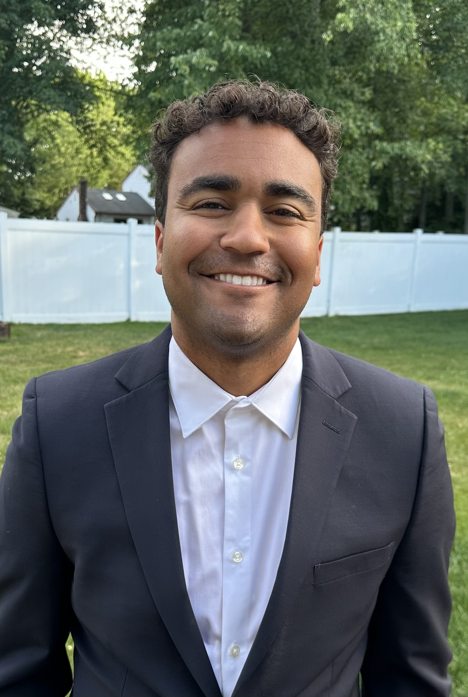

Student Portfolio
DJ Outler
I am a Masters of Public Administration student concentrating in Quantitative Policy Analysis at the Fels Institute of Government at the University of Pennsylvania. Through education and professional experience, I am seeking to find the best ways I can help city governments provide the means for residents to lead dignified and happy lives.

Purpose and direction
Enhancing city government
I am interested in working within city government to manage data-driven programs that improve the lives of city residents. My goal is to provide city residents, city employees, and city leadership with the best tools and information possible to better the community.